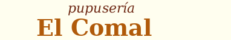
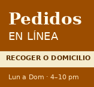

Responsable: Walter Alexander Ramírez Benítez · SMSS082124
El servidor oficial del equipo es la máquina virtual Debian de este rol. El sitio vive en /var/www/html/pupuseria y se publica desde un repositorio Git compartido.
walter@SoftwareLibreWalter :~ $ sudo apt install apache2 [sudo] contrasena para walter: apache2 ya esta en su version mas reciente (2.4.69-1~deb13u1). El paquete indicado a continuacion se instalo de forma automatica y ya no es neces linux-image-6.12.107+deb13-amd64 Utilicepara eliminarlo. Summary: Upgrading: 0, Installing: 0, Removing: 0, Not Upgrading: 61 walter@SoftwareLibreWalter :~ $_
Página por defecto verificada en http://127.0.1.1.
sudo apt install -y git cd /var/www/html sudo git clone https://github.com/Waltt99/SoftwareLibre.git
Prueba: http://127.0.1.1/AdminLTE
cd /var/www/html sudo git clone https://github.com/Waltt99/SoftwareLibre.git pupuseria # actualizar cuando un compañero sube cambios: cd /var/www/html/pupuseria && sudo git pull
sudo /usr/local/bin/respaldo_pupuseria.sh ls -lh /var/backups/pupuseria/
Programado en cron cada domingo a las 11:00 p.m. Guarda el sitio, la configuración de Apache y la de vsftpd, y conserva las últimas 8 copias.
| Dato | Valor |
|---|---|
| IP del servidor | http://127.0.1.1 |
| URL del sitio | http://http://127.0.1.1/pupuseria |
| Repositorio | https://github.com/Waltt99/SoftwareLibre.git |
| Último respaldo | [fecha y nombre del .tar.gz] |
Lunes a domingo
4:00 p.m. a 10:00 p.m.
Pedidos para recoger o a domicilio.
